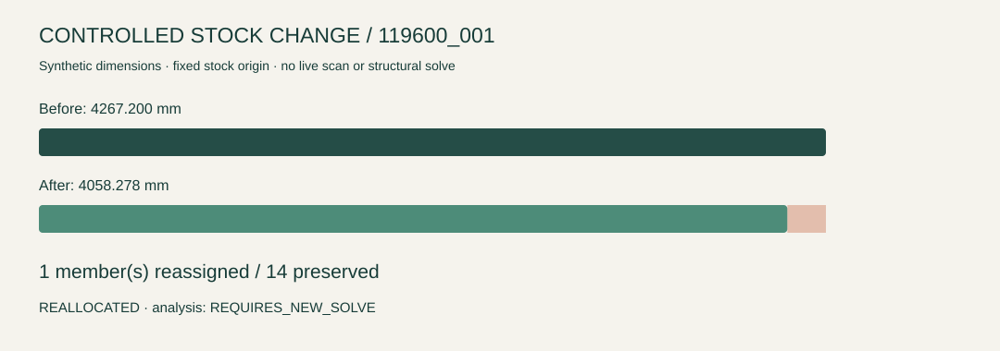

TIMBER / CONTROLLED EXPERIMENT 02
一根木材变化，哪些决策需要更新？
锁住未受影响的切割，保留原有设计，重新寻找受影响构件的材料来源。
本页来自程序实际输出。尺寸变化为人工构造，坐标变换为已知变换；未运行 DiffCheck 配准，也未重新运行 Karamba。库存来源和截面仍为记录数据，材料等级与连接承载力尚未验证。
三个对照场景
缩短实验的实际结果

分配仅重算受影响构件；为保证一致性，完整重建分析输入并检查新阶段。结构求解未执行，新输出不能引用旧位移结果。
材料账本
- member_count: 15.000
- required_length_before_mm: 8306.208
- required_length_after_mm: 8306.208
- kerf_before_mm: 45.000
- kerf_after_mm: 45.000
- residual_reuse_after_mm: 8306.208
- unused_stock_use_after_mm: 0.000
- discarded_tail_mm: 208.922
discarded_tail 表示受控实验移除的尾段；unused_stock 表示尚未分配的回收库存，并非新生产木材。这里只比较长度与锯缝，未计算碳排放或结构性能改善。
独立检查
- input_binding: PASS
- revision_consistency: PASS
- centerline_geometry: PASS
- stock_identity_dimensions: PASS
- cutting_ledger: PASS
- declared_load_paths: PASS
- analysis_input_consistency: PASS
- panel_load_conservation: PASS
- existing_allocations: PASS
- historical_association: NOT_APPLICABLE
- live_structural_analysis: UNKNOWN
- material_capacity: UNKNOWN
- connection_capacity: UNKNOWN
- foundation_design: UNKNOWN
- solid_geometry_clearance: UNKNOWN
范围与下一步
当前支持方案 A 中尚未加工的新增构件、固定木材原点、精确长度观测。缺端部或有测量不确定性时等待补充证据。若缩短触及既有构件或无法解释的材料区间，会报告超出修复范围。贪心搜索失败不等于证明全局无解。
下一步用真实测量建立尺寸和置信区间，并在 Rhino / Karamba 实际运行新的分析输入。
完整结果 JSON · 新求解请求绑定 · 独立 SVG 图